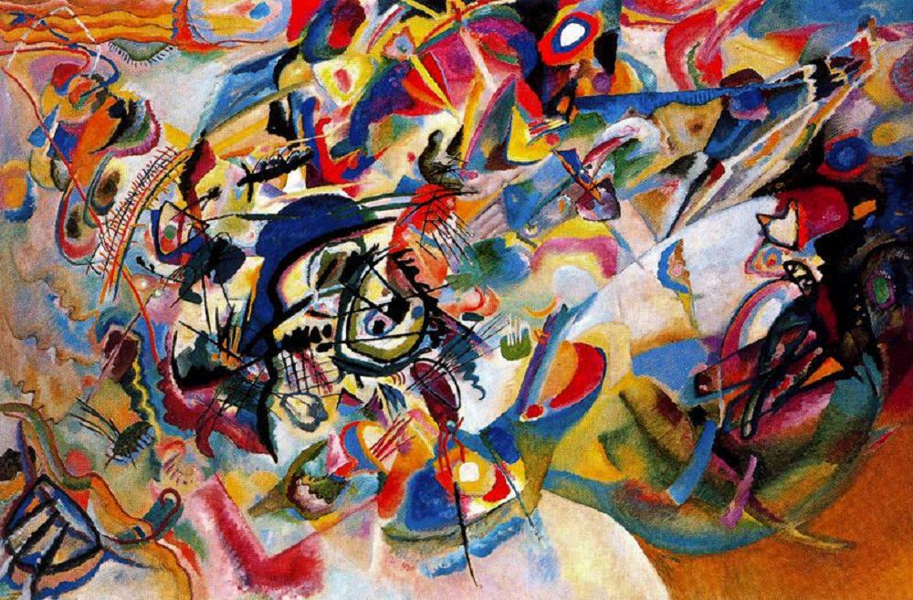
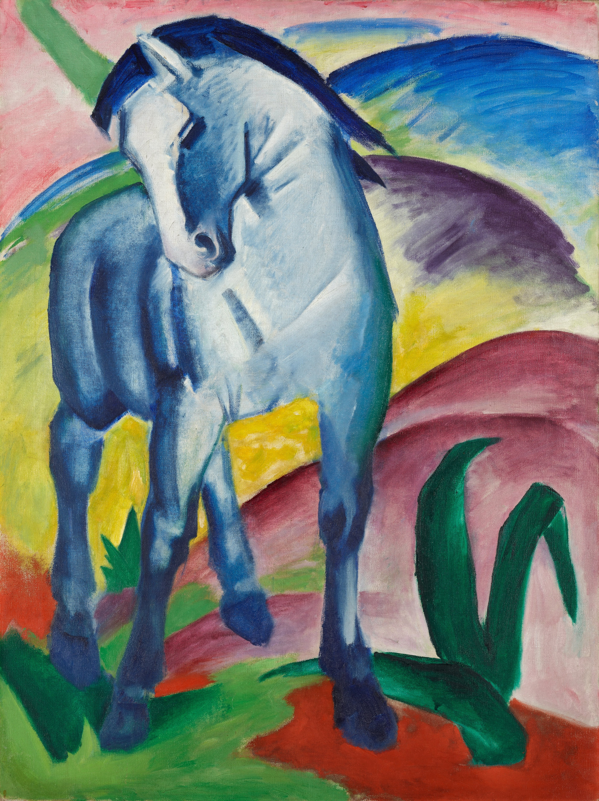
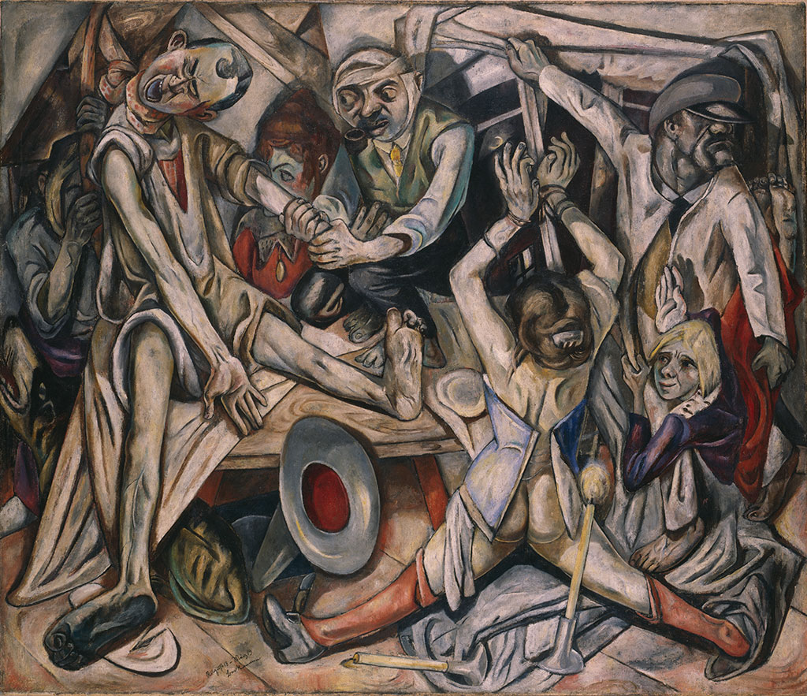
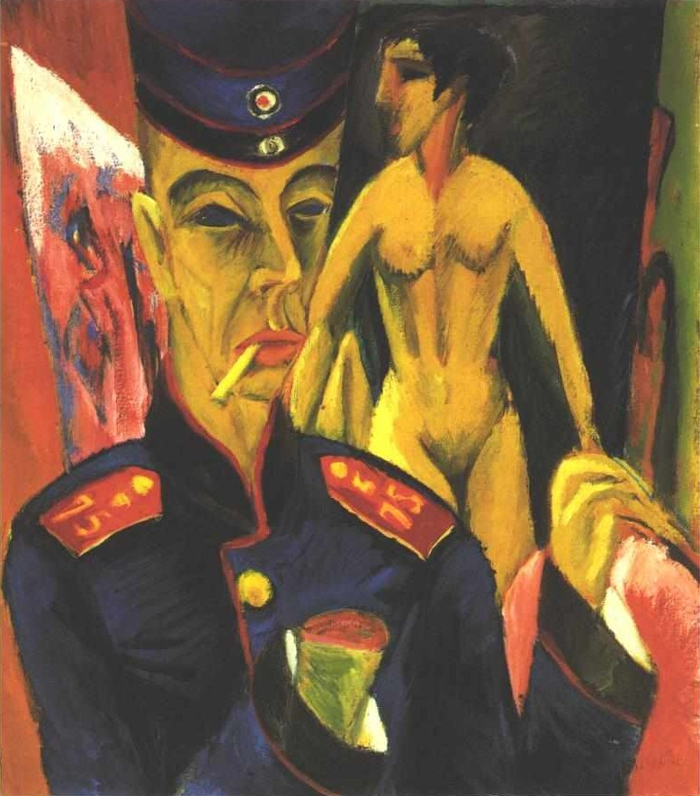
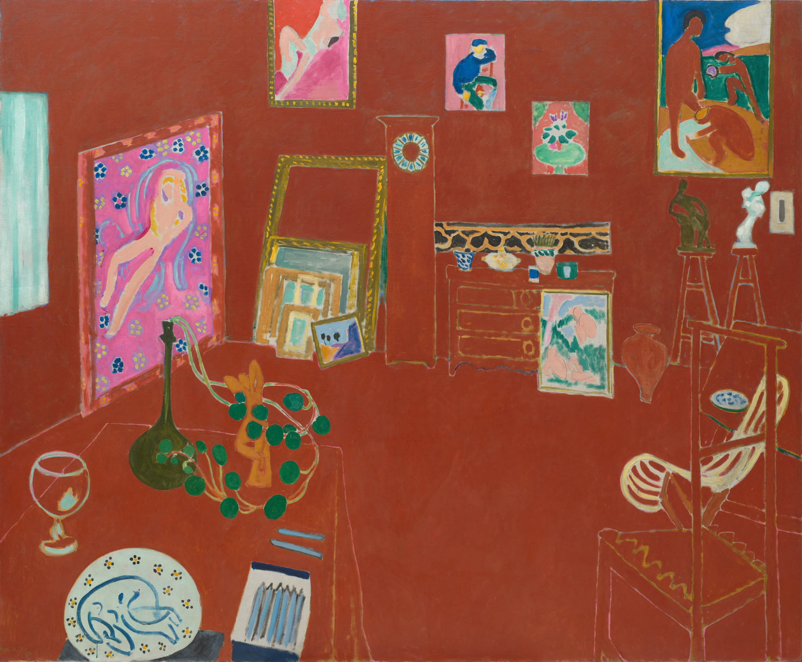
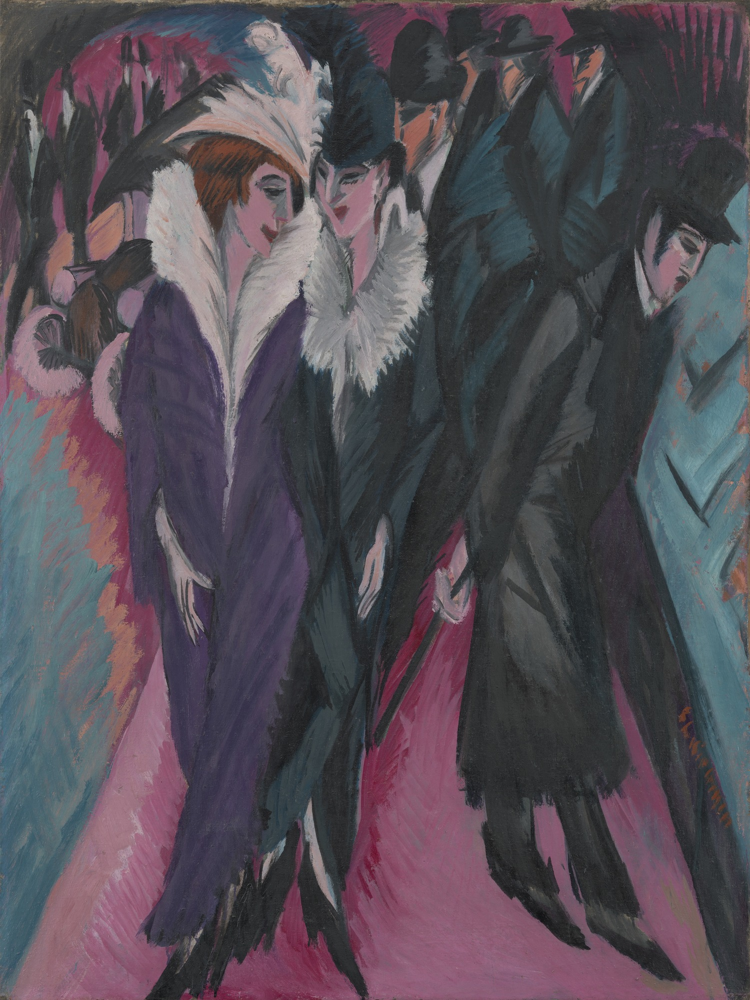
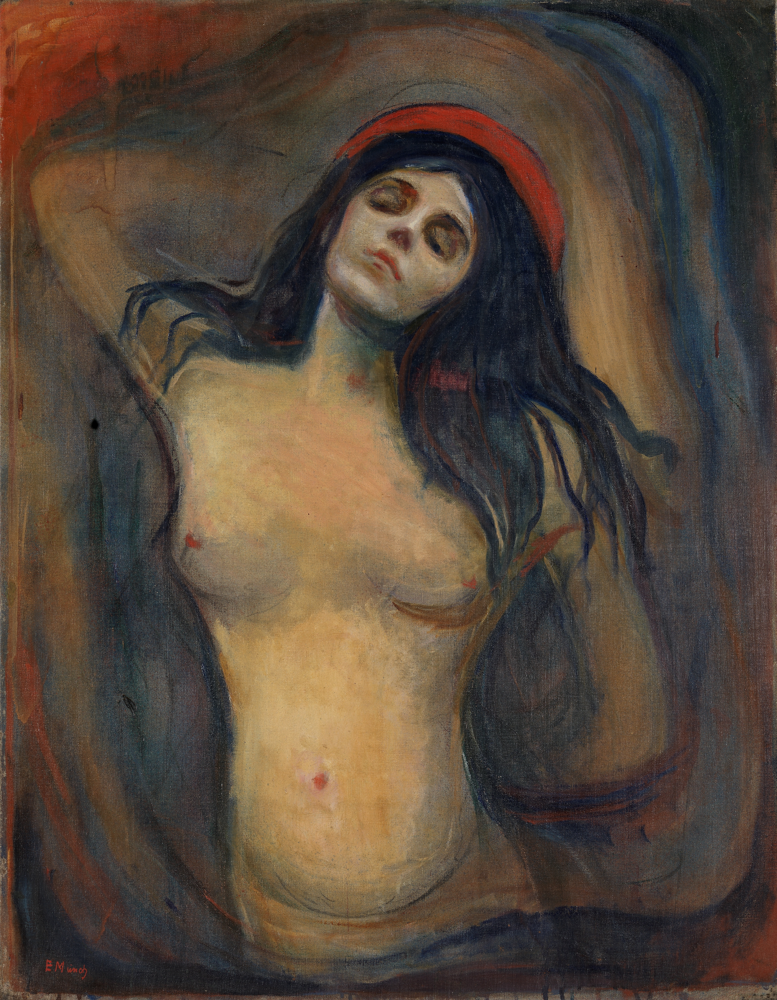

Meesterwerk: De Schreeuw
Edvard Munch, 1893

⚜️ UITGEBREIDE STIJLFIGUREN
😰 VERVORMING
Realiteit buigen: Objecten en figuren worden vervormd om emotionele toestanden uit te drukken. Natuurgetrouwheid is minder belangrijk dan innerlijke waarheid.
Golven en kronkels: Lijnen die bewegen en trillen, alsof de hele wereld in angst of extase beweegt.
🎨 FELLE, EXPRESSIEVE KLEUREN
Niet-natuurlijke kleuren: Groene gezichten, paarse bomen, rode luchten. Kleur is emotie, geen beschrijving.
Complementaire contrasten: Rood/groen, blauw/oranje om spanning te creëren.
📐 HOEKIGE, DYNAMISCHE LIJNEN
Scherpe hoeken: Geen zachte Impressionistische rondingen, maar scherpe, gespannen lijnen.
Dynamiek: Diagonale composities die beweging en instabiliteit suggereren.
👁️ PSYCHOLOGISCHE DIEPEGANG
Innerlijk landschap: De ziel wordt zichtbaar. Angst, eenzaamheid, verlangen.
Symboliek: Objecten staan niet op zichzelf maar dragen emotionele lading.
🔗 TIJDSGEEST CONTEXT (1905-1930)
🏛️ POLITIEK PERSPECTIEF: De Eerste Wereldoorlog (1914-1918) vernietigt de Europese orde. Keizerrijken vallen, republieken ontstaan. De Russische Revolutie (1917) brengt angst en hoop. In Duitsland broeit het nationalisme. Die Brücke wordt gezien als "ontaarde kunst" door de nazi's (Entartete Kunst, 1937). De politieke chaos reflecteert in de vervormde beelden.
📚 LITERAIR PERSPECTIEF: Expressionistische poëzie (Trakl, Heym) gebruikt vrije ritmes, schreeuwerige beelden, en apocalyptische thema's. Kafka's verhalen tonen de vervreemding van de moderne mens. Het theater van Wedekind en Kaiser toont neurotische, gepassioneerde figuren. De tekst wordt ruw, direct, geschokt door interpunctie.
🧠 PSYCHOLOGISCH PERSPECTIEF: Freud's "Die Traumdeutung" (1900) en zijn theorie van het onderbewuste (Es, Ich, Über-Ich) revolutioneren het denken over de mens. Dromen, trauma's, verdrongen verlangens komen naar de oppervlakte. De Expressionist schildert niet wat hij ziet, maar wat hij voelt - de innerlijke werkelijkheid primeert.
⚙️ HISTORISCH PERSPECTIEF: De industrialisatie versnelt. Steden groeien explosief (Berlijn heeft 4 miljoen inwoners in 1920). Massaproductie, massasamenleving, massavernietiging. De Eerste Wereldoorlog introduceert tanks, gifgas, vliegtuigen - de mens wordt een getal in de oorlogsmachine. De Spaanse Griep (1918-1919) doodt miljoenen.
🎭 FILOSOFISCH PERSPECTIEF: Nietzsche's "God is dood" en zijn kritiek op de verloochende wereld. Spengler's "Der Untergang des Abendlandes" (1918) voorspelt de ondergang van de westerse beschaving. Existentialisme wijst op de absurditeit van het bestaan. Er is geen objectieve waarheid meer - alleen subjectieve ervaring telt. De kunstenaar is profeet van de ondergang.
🎨 MEESTERWERKEN - GEDETAILLEERDE ANALYSE
1. "De Schreeuw" (1893) — Edvard Munch
National Museum, Oslo · 91 × 74 cm · Tempera en pastel op karton
Achtergrond: Een pad langs de haven van Oslo bij zonsondergang. Munch beschreef het ontstaan: "De zon ging onder, de wolken werden rood als bloed. Ik voelde een schreeuw door de natuur gaan." Dit is het eerste Expressionistische werk, al voor de beweging officieel begon.
🔍 STIJLANALYSE
Vervorming: Het gezicht is een masker van pure angst - ogen wijd open, mond een gat van afgrijzen. De handen aan de wangen drukken de schreeuw uit. Het lichaam is gedraaid, alsof het in elkaar krimpt.
Landschap dat schreeuwt: De hemel is golvende lijnen van rood en oranje, alsof het vuur is. De brug golft mee. De natuur is niet mooi maar bedreigend. Alles trilt.
Kleuren: Oranje en rood (alarm, gevaar) domineren. Het gezicht is grijs-groen (dood, ziekte). De contrasten zijn extreem - er is geen middenweg, geen grijs.
Lijnen: Golvende, kronkelende lijnen die beweging en instabiliteit suggereren. Er is geen vast punt om vast te houden. Alles beweegt, alles dreigt.
Eenzaamheid: De twee figuren op de brug kijken niet om, ze horen niets. De schreeuwende figuur is volledig alleen in zijn angst. Dit is existentiële eenzaamheid.
Techniek: Tempera en pastel op karton - niet duurzame materialen, alsof de emotie te heftig is voor olieverf op doek. De oppervlakte is ruw, ongelijk.
2. "Compositie VII" (1913) — Wassily Kandinsky
Tretyakov Gallery, Moskou · 200 × 300 cm · Olieverf op doek

Achtergrond: Kandinsky's meesterwerk net voor hij volledig abstract werd. Het is een apocalyptisch visioen - de Dag des Oordeels in abstracte vorm. Er zijn nog herkenbare elementen (paarden, figuren) maar ze zijn opgelost in een storm van kleur.
🔍 STIJLANALYSE
Chaos en orde: Ondanks het extreme lijkt het willekeurig, er is een onderliggende structuur. Kandinsky hoorde muziek bij kleuren - dit is een symfonie van vormen.
Kleuren als emotie: Blauw = spiritualiteit, rood = vuur/passion, geel = vreugde. De kleuren botsen en mengen zoals emoties dat doen.
Apocalyps: De wervelingen suggereren een einde van de wereld. Paarden (apocalyptische ruiters?), figuren die vallen, explosies van licht.
Grensoverschrijdend: Dit werk staat op de grens van Expressionisme en abstractie. Het is nog steeds over iets (een visioen), maar het wordt steeds moeilijker te ontcijferen.
Spiritualiteit: Kandinsky geloofde dat kunst de ziel kon raken, net als muziek. Je hoeft niets te herkennen om het te voelen.
3. "De Toren van Blauwe Paarden" (1913) — Franz Marc
Städtische Galerie, München · 200 × 130 cm · Olieverf op doek

Achtergrond: Een van de laatste werken van Marc voor hij in 1916 sneuvelde in WWI. Paarden waren voor hem heilige dieren - zuiverder dan mensen. De "Blaue Reiter" (Blauwe Ruiter) groep waar hij toebehoorde, zocht spiritualiteit in kunst.
🔍 STIJLANALYSE
Kleurensymboliek: Blauw = mannelijk, spiritualiteit, diepte. Geel = vrouwelijk, vreugde, warmte. Rood = zwaarte, aarde, materie. De paarden zijn blauw - ze zijn verheven boven het materiële.
Torenstructuur: De paarden stapelen zich op als een toren naar de hemel. Het is een hierarchie van zuiverheid - hoe hoger, hoe meer geestelijk.
Organische vormen: Ronde, golvende lijnen. Geen scherpe hoeken - dit is een vreedzame, bijna meditatieve compositie. Anders dan het angstige Expressionisme van Munch.
Natuurromantiek: De heuvels en maan suggereren een paradijselijk landschap. Dit is geen echte wereld maar een droom van zuiverheid.
Primitivisme: De vereenvoudigde vormen refereren aan volkskunst en middeleeuwse kunst. Marc zocht naar een "oer" taal van beelden.
4. "Vrouw met een Hoed" (1905) — Henri Matisse
San Francisco Museum of Modern Art · 79 × 59 cm · Olieverf op doek

Achtergrond: Matisse's vrouw Amélie. Geschilderd in 1905, het jaar dat de term "Fauves" (wilde beesten) werd bedacht door critici. Het schilderij veroorzaakte een schandaal op de Salon d'Automne in Parijs.
🔍 STIJLANALYSE
Fauve kleuren: Een groen streep op de neus. Een roze wang. Een blauwe baard. De hoed is een explosie van rood, groen, en geel. Dit is niet hoe mensen eruitzien, maar hoe emoties voelen.
Losse penseelvoering: De verf is dik en zichtbaar. Je ziet elke veeg. Er is geen poging om glad en "mooi" te zijn. Het is ruw, direct, eerlijk.
Vlakheid: Geen diepte, geen modellering. Het gezicht is een plat vlak van kleur. De achtergrond is groene strepen. Het is bijna een decoratief patroon.
Matisse vs. Munch: Beide zijn Expressionisten, maar Matisse is vrolijk waar Munch angstig is. Matisse zoekt schoonheid en vreugde in kleur, zelfs als het "onnatuurlijk" is.
5. "De Nacht" (1918-1919) — Max Beckmann
Kunstsammlung Nordrhein-Westfalen, Düsseldorf · 133 × 154 cm · Olieverf op doek

Achtergrond: Geschilderd net na WWI, waarin Beckmann diende als medic. De nachtmerrieachtige scène toont geweld, marteling, en claustrofobie. Dit is geen specifieke gebeurtenis maar een visioen van de hel van de oorlog.
🔍 STIJLANALYSE
Claustrofobie: De ruimte is een kooi. Het plafond drukt naar beneden, de muren sluiten zich samen. Er is geen ontsnapping mogelijk. De figuren zijn opgepropt in een te kleine ruimte.
Geweld: Een man wordt opgehangen, een vrouw wordt vastgebonden, een ander figuur wordt gemarteld. Het is een orgie van wreedheid. Maar het is niet realistisch - het is symbolisch.
Hoekige vormen: Scherpe, stekelige lijnen. Alles lijkt gespannen, gespannen tot het maximum. De diagonale compositie maakt het nog onstabieler.
Kleuren: Donker, somber. Bruin, grijs, groen - de kleuren van vuilheid en dood. Alleen hier en daar een vlek rood (bloed).
Symboliek: De kaart op tafel, de kroonluchter, de spiegel - alles heeft betekenis. Het is een allegorie van de ondergang van de burgerlijke maatschappij.
6. "Zelfportret als Soldaat" (1915) — Ernst Ludwig Kirchner
Allen Memorial Art Museum, Oberlin · 69 × 61 cm · Olieverf op doek

Achtergrond: Kirchner diende in WWI maar had een zenuwinzinking en werd afgekeurd. Dit schilderij toont zijn trauma. De afgehakte hand rechts symboliseert zijn verloren creativiteit door de oorlog.
🔍 STIJLANALYSE
De afgehakte hand: Het meest schokkende element. De rechterhand - de hand waarmee hij schilderde - is een stomp. Het model naast hem (een naakt) staat voor de kunst die hij niet meer kan maken.
Gelaatsuitdrukking: Ogen wijd open, starend, geschokt. Het uniform is te groot - hij is verdwenen in de oorlogsmachine. Het is geen held, maar een slachtoffer.
Kleuren: Giftig groen (ziekte), paars (dood), oranje (alarm). Er is geen natuurlijk vleeskleur. De huid is grauw, dodelijk.
Die Brücke: Kirchner was een van de oprichters van deze Expressionistische groep. Dit werk toont waarom ze radicalen waren - geen patriotisme, alleen pijn.
7. "Het Rode Atelier" (1911) — Henri Matisse
Museum of Modern Art, New York · 181 × 219 cm · Olieverf op doek

Achtergrond: Matisse's atelier in Issy-les-Moulineaux, buiten Parijs. De muren zijn in het echt wit, maar Matisse schildert ze rood. Dit is hoe het atelier VOELT, niet hoe het eruitziet.
🔍 STIJLANALYSE
Alles is rood: De vloer, de muren, het meubilair - alles domineerd door één kleur. Het is alsof we door een rood filter kijken. Dit is niet realistisch maar expressief.
Kunst in kunst: Matisse schildert zijn eigen schilderijen en beelden die in het atelier staan. Het is een autobiografie in rood. We zien zijn hele oeuvre in één kamer.
Vlakheid: Geen perspectief, geen diepte. De tafel lijdt te zweven. De stoel heeft geen zitting. Het is decoratief, bijna een behangpatroon.
Emotie van rood: Matisse zei dat rood "een kleur van kracht" was. Maar hier is het ook warm, intiem, persoonlijk. Het atelier is zijn wereld, en die wereld is rood.
8. "De Dans" (1910) — Henri Matisse
Hermitage Museum, St. Petersburg · 260 × 391 cm · Olieverf op doek

Achtergrond: Opdracht van de Russische kunstverzamelaar Shchukin. Matisse maakte drie versies. Dit toont vijf naakte figuren die in een kring dansen - een oerbeeld van vreugde en gemeenschap.
🔍 STIJLANALYSE
Primitivisme: De figuren zijn vereenvoudigd tot essentie - hoofd, torso, ledematen. Geen details, geen individualiteit. Dit zijn archetypes, geen portretten.
Beweging in cirkel: De dansers houden elkaars hand vast en draaien. De cirkel is een oud symbool van eenheid en eeuwigheid. De beweging is zichtbaar in de gebogen lijnen.
Drie kleuren: Blauw (hemel/achtergrond), groen (aarde), rood (mensen). De rode figuren springen eruit - de mens is centraal, maar deel van de natuur.
Vreugde: Dit is Matisse op zijn meest optimistisch. Geen angst, geen oorlog, alleen dans en lichaam. Het is een utopie van puur genot.
9. "Straat, Berlijn" (1913) — Ernst Ludwig Kirchner
Museum of Modern Art, New York · 120 × 91 cm · Olieverf op doek

Achtergrond: Het moderne Berlijn van de jaren '10 - wijd boulevards, elegant geklede mensen, prostituees (herkenbaar aan de hoge hoeden). Kirchner toont de vervreemding achter de glitters van de stad.
🔍 STIJLANALYSE
Scherpe hoeken: De figuren zijn hoekig, bijna gevaarlijk. De man met de hoge hoed lijkt een roofdier. De vrouwen zijn mannequins, niet mensen.
Zwarte lijnen: Dikke, zwarte omtreklijnen (zoals in houtsneden) scheiden de kleurvlakken. Dit verwijst naar primitieve kunst en Japanse prenten.
Stad als jungle: De straat is niet vriendelijk maar bedreigend. De mensen kijken niet naar elkaar. Iedereen is alleen in de menigte.
Kleuren: Paars, groen, roze - onnatuurlijke kleuren voor een straat. Het is nacht, of het is een nachtmerrie. De stad is vervormd door angst.
10. "Madonna" (1894-1895) — Edvard Munch
Munch Museum, Oslo · 90 × 68 cm · Olieverf op doek

Achtergrond: Een naakte vrouw met gesloten ogen, hoofd achterover. Het is geen traditionele Madonna, maar een visie van extase - zowel spiritueel als seksueel. De sperma-achtige rand rondom veroorzaakte schandalen.
🔍 STIJLANALYSE
Extase en angst: Het gezicht toont verrukking, maar ook iets pijnlijks. Dit is de "dood en het leven" tegelijk - het thema van Munch's hele oeuvre ("De Levensdans").
Rode achtergrond: Bloed, hartslag, passie. De halo is niet goud maar rood. Dit is een seculiere Madonna, een afgodin van liefde en dood.
Sensuele lijnen: De bochtige lijnen van lichaam en haar suggereren beweging en emotie. Het is bijna orgastisch - controversieel voor de jaren '90 van de 19e eeuw.
Symboliek: De foetus in de hoek linksonder, de skeletachtige figuur rechtsonder - leven en dood omringen het moment van extase.
📚 CONCLUSIE: DE SCHREEUW VAN DE MODERNE MENS
Het Expressionisme geeft stem aan wie geen stem heeft:
- De soldaat: Die de hel van de oorlog heeft gezien (Kirchner, Beckmann)
- De stedeling: Die verdwalen in de moderne stad (Kirchner)
- De eenzame: Die angstig is in een goddeloze wereld (Munch)
- De zoeker: Die spiritualiteit zoekt in abstractie (Kandinsky, Marc)
- De vreugdevolle: Die kleur viert als levenskracht (Matisse)
Het Expressionisme zegt: "Je hoeft niet mooi te schilderen. Je hoeft waarachtig te zijn."